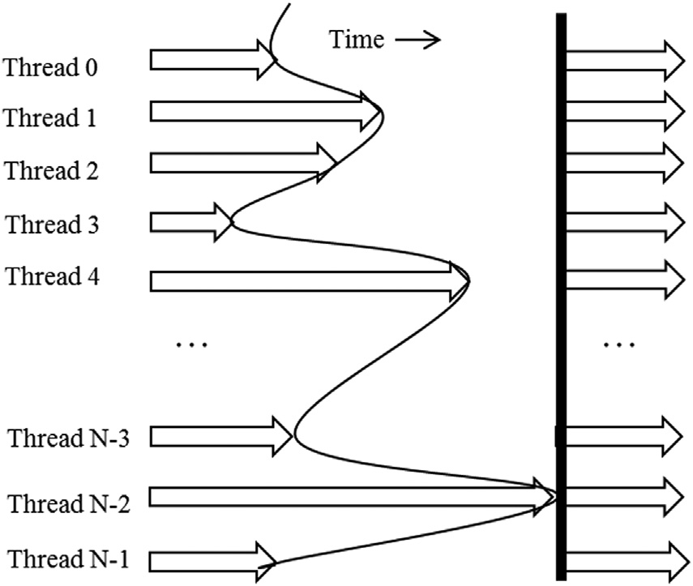
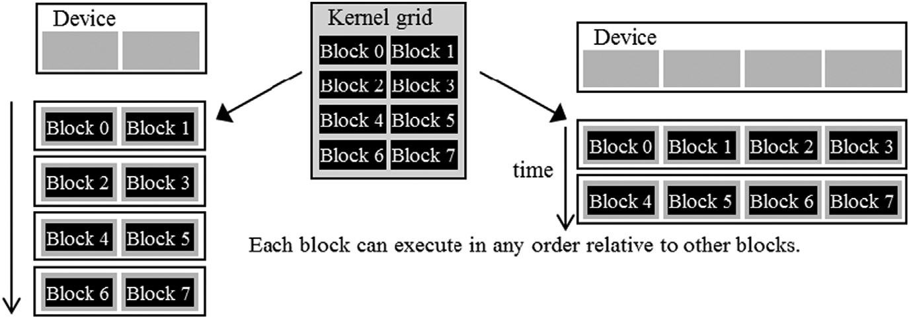

4.3 同步和透明可扩展性
CUDA 允许同一block内的线程使用屏障同步函数 __syncthreads() 来协调它们的活动。注意，“__” 由两个 “_” 字符组成。当一个线程调用 __syncthreads() 时，它将在调用的程序位置处停留，直到同一block中的每个线程都到达该位置。这确保了一个block中的所有线程都已完成其执行的某个阶段，然后才能继续到下一个阶段。
屏障同步是一种简单且流行的协调并行活动的方法。在现实生活中，我们经常使用屏障同步来协调多人的并行活动。例如，假设四个朋友开车去购物中心。他们可以各自去不同的商店购物。这是一种并行活动，比他们作为一个整体依次访问所有感兴趣的商店要高效得多。然而，在离开购物中心之前需要进行屏障同步。他们必须等到四个朋友都回到车里后才能离开。那些比其他人早完成购物的人必须等待那些较晚完成购物的人。如果没有屏障同步，当车离开时，可能会有一个或多个人被留在购物中心，这可能会严重损害他们的友谊！

图4.3
一个屏障同步执行的例子。箭头表示随时间进行的执行活动。垂直方向的曲线标记了每个线程执行__syncthreads的时间。垂直曲线右侧的空白区域表示每个线程等待所有线程完成的时间。垂直线标记最后一个线程执行 __syncthreads 语句的时间，之后所有线程都可以继续执行 __syncthreads 语句之后的语句。
[图 4.3](#fig4.3) 说明了屏障同步的执行过程。block中有 N 个线程。时间从左到右流逝。一些线程较早到达屏障同步语句，而另一些线程则晚得多。那些较早到达屏障的线程将等待那些较晚到达的线程。当最后一个线程到达屏障时，所有线程才可以继续执行。通过屏障同步，“没有人会被落下。”
```c++
void incorrect_barrier_example(int n) {
...
if (threadIdx.x % 2 == 0) {
...
__syncthreads{};
}
else {
...
__syncthreads{};
}
}
```
图4.4
一个错误的__syncthreads()的用法
在CUDA中，如果存在`__syncthreads()`语句，则必须由一个block中的所有线程执行。当`__syncthreads()`语句放置在if语句中时，要么block中的所有线程执行包含`__syncthreads()`的路径，要么没有一个线程执行该路径。对于if-then-else语句，如果每个路径中都有`__syncthreads()`语句，要么block中的所有线程执行then路径，要么所有线程执行else路径。这两个`__syncthreads()`是不同的屏障同步点。例如，在图4.4中，在第04行开始的if语句中使用了两个`__syncthreads()`。所有具有偶数threadIdx.x值的线程执行then路径，而其余线程执行else路径。第06行和第10行的`__syncthreads()`调用定义了两个不同的屏障。由于不能保证block中的所有线程都执行其中任一屏障，因此该代码违反了`__syncthreads()`的使用规则，并将导致未定义的执行行为。通常，不正确的屏障同步使用会导致错误的结果，或线程永远相互等待，这称为死锁。程序员有责任避免这种不适当的屏障同步使用。
屏障同步对block内的线程施加执行约束。这些线程应在时间上接近彼此地执行，以避免过长的等待时间。更重要的是，系统需要确保参与屏障同步的所有线程都能访问必要的资源，最终到达屏障处。否则，一个永远无法到达屏障同步点的线程可能会导致死锁。CUDA运行时系统通过将执行资源作为一个单元分配给block中的所有线程来满足这一约束，正如我们在第4.2节中所见。不仅block中的所有线程必须分配给同一个SM（流式多处理器），而且它们还需要同时分配到该SM。也就是说，一个block只有在运行时系统确保了block中所有线程完成执行所需的所有资源后才能开始执行。这确保了block中所有线程的时间接近性，并防止在屏障同步期间出现过长甚至无限的等待时间。

图4.5
block之间没有同步限制使得CUDA程序可以透明扩展
这引导我们思考CUDA屏障同步设计中的一个重要权衡。通过不允许不同block中的线程相互进行屏障同步，CUDA运行时系统可以以任意顺序执行各个block，因为它们不需要相互等待。这种灵活性实现了可扩展的实现方式，如图4.5所示。图中时间从上到下推进。在资源较少的低成本系统中，可以同时执行少量block，如图4.5左侧所示，一次执行两个block。在具有更多执行资源的高端实现中，可以同时执行多个block，如图4.5右侧所示，一次执行四个block。如今的高端GPU可以同时执行数百个block。
能够以不同速度执行相同应用代码的能力使得可以根据不同市场细分的成本、功耗和性能要求生产出各种实现方案。例如，一款移动处理器可能会以较慢的速度执行应用程序，但功耗极低，而一款桌面处理器可能会以更高的速度执行相同的应用程序，同时消耗更多的电力。两者都无需更改代码即可执行相同的应用程序。这种在具有不同执行资源的硬件上执行相同应用代码的能力被称为透明可伸缩性，这减少了应用开发者的负担并提高了应用程序的可用性。